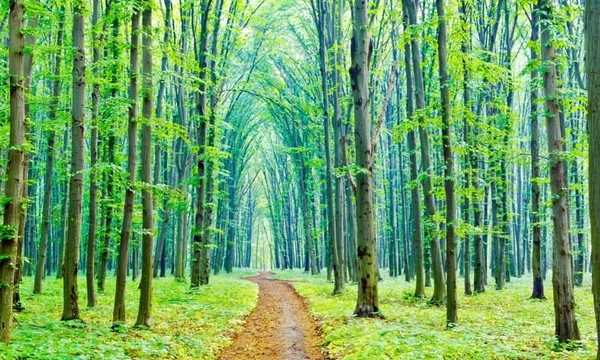
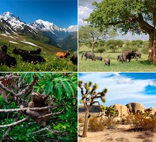

Tipos de Ecosistemas
Index
Inicio
Flora y Fauna
Clima
Contacto y Referencias
<
>

Tipos de Ecosistemas
Bosques:
Los bosques son caracterizados por poseer gran cantidad de árboles y una gran diversidad de especies de fauna y flora que hace de este bioma uno de los más importantes para la biósfera del planeta.
Los bosques se distribuyen alrededor del mundo, pero los principales y con más cobertura de hectáreas se encuentran en Rusia, seguido de Brasil, Norteamérica, China, Australia y el Congo.
Las sabanas tropicales están ubicadas en regiones cálidas donde existe lluvia (mayormente en verano) pero también largas temporadas de sequía que conlleva a que se generen incendios naturales.
Sabana:
Existen distintos tipos de sabanas que varían de acuerdo a la ubicación geográfica. Estas son diferentes en cuanto a la temperatura, suelo y tipo de flora y fauna. También son llamadas praderas tropicales.
Las sabanas están ubicadas en la parte inferior de nuestra tierra. Las principales sabanas de encuentran en el continente africano, aunque también existen sabanas tropicales en América del Sur, Australia y la India.
Los bosques están formados por mucha vegetación y dentro de ellos se pueden encontrar especies muy exóticas y peligrosas. Muchos exploradores se adentran en estos lugares para realizar estudios y conocer el modo de vida de distintas especies, pero deben de estar muy bien ubicados para no perderse, ya que ahí es muy fácil perder el sentido de la orientación.
Jungla:
La selva es conocida por diversos nombres, como jungla y bosque lluvioso. Se caracteriza principalmente por albergar árboles de gran altura y una extensa cantidad de especies de fauna y flora. Se cree que es el bioma más antiguo de la Tierra, y que su aspecto no ha cambiado mucho durante los últimos 70 millones de años.
Se ha llegado a considerar a las selvas puntos calientes del planeta al encontrarse principalmente en regiones de clima tropical y albergar la mayor parte de las especies. Contiene los hábitats más importantes del planeta, lo que la hace el bioma con mayor biodiversidad.
Las selvas cubren alrededor del 6 por ciento de la superficie terrestre y se localizan en diferentes latitudes del mundo, pero especialmente entre el Trópico de Cáncer y el Trópico de Capricornio. Abarcan el continente americano, africano y asiático, llegando también a algunas islas de Oceanía. Incluso existen en pequeñas partes de Europa, por lo que Antártida es el único continente exento de ellas.
Hielos Perpetuos:
Los hielos perpetuos son aquellos lugares que presentan temperaturas por debajo de los -30 grados y -10 grados, donde también incurren precipitaciones en forma de granizo. Se encuentran en los polos; en el Ártico y en la Antártida.
Se les llama hielos perpetuos, debido a que su formación geológica compuesta de cordilleras, suelos, mesetas, está cubierta de hielo de manera permanente con climas polares o de alta montaña.
Las zonas conocidas del planeta Tierra que se caracterizan por tener estas condiciones son el Ártico y la Antártida.
Desiertos:
El ecosistema del desierto se refiere a las diferentes especies de plantas y animales que conviven en las zonas desérticas. Entre éstas existen relaciones vitales que determinan sus condiciones de vida y posibilitan la mutua supervivencia.
Los desiertos son territorios que se caracterizan por un ambiente árido y seco, ocasionado por la escasez de lluvias. Estas características hacen que sean zonas difíciles de habitar.
Los desiertos reciben menos de 25 centímetros de lluvia al año y este valor suele ser variable, por lo que en ocasiones puede ser aun menor. Por ejemplo, existen zonas del desierto del Sahara que pasan años sin recibir una sola gota de lluvia.
En las zonas desérticas se presentan amplias gamas de temperatura a lo largo del día y la noche. La ausencia de vegetación y agua dificulta que la tierra absorba la radiación solar.
El suelo es muy seco, usualmente compuesto de arena; por lo tanto, es bajo en nutrientes orgánicos necesarios para la mayoría de plantas. Esto hace difícil el desarrollo de la vegetación y sólo algunas especies pueden crecer en éste.
Los animales y plantas que pueblan los desiertos suelen tener características especiales que permiten su supervivencia. Entre estas características destacan la capacidad de almacenar agua y de reproducirse rápidamente durante los breves períodos de humedad.
Ecosistemas Marinos:
Son los más extensos, ya que se ocupan más de las dos terceras partes del Planeta. Esenciales para nuestra supervivencia, todos los expertos alertan sobre el deterioro al que les está conduciendo la presencia humana.
Junto a la selva Amazónica, siempre considerada el pulmón del mundo, los océanos colaboran en esa función al suministrar la mitad del oxígeno que consumimos, a la vez que absorben más de la cuarta parte del CO2 que producimos.
Las grandes masas de agua salada se concentran en cinco océanos (Atlántico, Pacífico, Índico, Ártico y Antártico). Sumados a los mares, de tamaño más reducido y que se extienden por todo el planeta, contienen el 97% del agua libre de la Tierra.

 Teléfono:55 2712 5493
Teléfono:55 2712 5493.png) Facebook: Marco Valencia
Facebook: Marco Valencia Instagram: marcovalencia10
Instagram: marcovalencia10